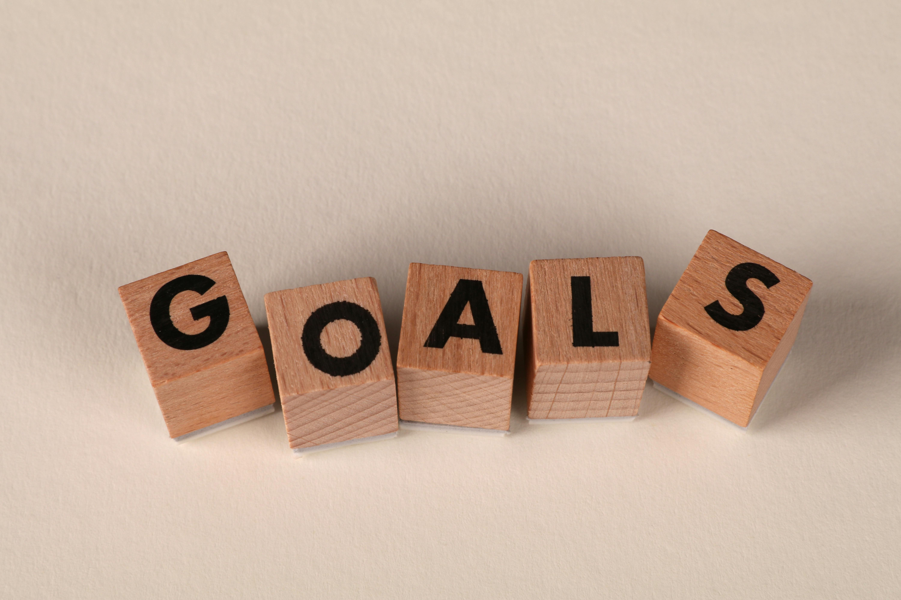

<!DOCTYPE html>
<html lang="eng">
    <head>
        <meta charset="UTF-8">
        <meta name="viewport" content="width=device-width initial-scale=1.0">
        <title>about</title>
        <script>
            document.addEventListener('DOMContentLoaded', () => {
                const options = {
                threshold: 0.1
                };

                const observer = new IntersectionObserver((entries, observer) => {
                entries.forEach(entry => {
                    if(entry.isIntersecting){
                    entry.target.classList.add('animate');
                    observer.unobserve(entry.target);
                    }
                });
                }, options);

                const sections = document.querySelectorAll('.work, .goals');
                sections.forEach(section => {
                observer.observe(section);
                });
            });
    </script>
</body>
</html>

        <link rel="stylesheet" href="styles.css">
    </head>
    <body>
        <header>
            <nav>
                <ul>
                    <li><a href="index.html">Home</a></li>
                    <li><a href="#">About</a></li>
                    <li><a href="portfolio.html">Portfolio</a></li>
                    <li><a href="contact.html">Contact</a></li>
                </ul>
            </nav>
        </header>
        <main>
            <section class="about">
                <h1>About</h1>
                <h2>I Am Aparna Kumar</h2>
                <p>A passionate web developer and technology enthusiast from India. I love building user-friendly websites that combine clean design with powerful functionality.</p>
                </br>
                <p>Over the past few months, I've been exploring web development through hands-on projects using HTML, CSS, JavaScript, and frameworks like Laravel and WordPress. I'm also learning Shopify theme customization and continuously experimenting with new tools and technologies.</p>
            </section>
            <section class="intro">
                <p>My journey into web development started with a curiosity about how websites work. Since then, I’ve been learning through tutorials, internships, and real-world projects. I enjoy solving problems, learning new skills, and creating things that make an impact.</p>
            </section>

            <section class="work"> 
                <div class="work-text">
                    <h2>What I'm Working On</h2>
                    <ul>
                        <li>Designing responsive websites</li>
                        <li>Customizing WordPress and Shopify Themes</li>
                        <li>Building Laravel Based Application</li>
                        <li>Learning MySQL & Ajax</li>
                    </ul>
                </div>
                <div class="work-image">
                    
                </div>
            </section>

            <section class="goals">
                <div class="goals-image">
                    
                </div>
                <div class="goals-text">
                    <h2>Goals</h2>
                    <ul>
                        <li>Become a full stack-web developer</li>
                        <li>Contribute to open-source projects</li>
                        <li>Land a role in a creative, tech-forward company</li>
                    </ul>
                </div>
            </section>      
        </main>
    </body>
    <footer>
        <h3>Thank you for your time...</h3>
    </footer>
</html>